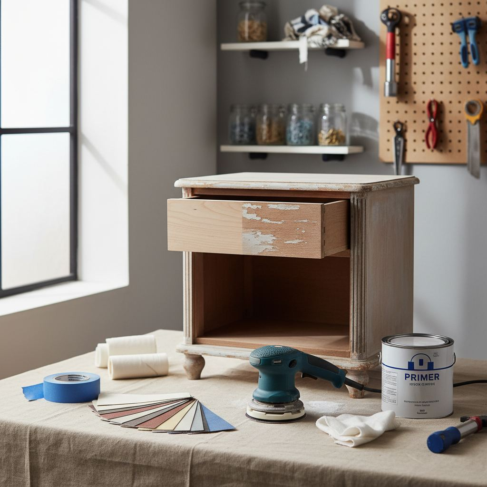

Upcycling Furniture Basics: A Beginner's First Project

Every upcycling failure I have seen came from skipping prep. If you get the prep right, even a cheap paint job will last.
Picking the right piece
Choose a small piece — a side table, a stool, a bedside cabinet — with a solid wood frame and simple lines. Skip veneered particleboard for your first project; it chips and peels.
Prep matters most
Clean with sugar soap, sand with 120-grit then 220-grit, wipe down with a tack cloth, and prime with a shellac-based primer. This is 80 percent of the job.
Choosing a finish
For a first project, a water-based furniture paint plus two coats of clear polyurethane is forgiving, dries fast, and holds up. Chalk paint looks great but needs waxing and rewaxing.

Essential Tools for Success
Before you even think about brushes and paint, having the right foundational tools will save you immense frustration and yield a far better result. Don't skimp here; consider these an investment. A quality orbital sander, like a Makita BO5041K, costs around $100-$120. It's ergonomic and powerful enough for most home projects. Pair it with a variety pack of sanding discs – 80-grit for tough old finishes, 120-grit for general smoothing, and 220-grit for final preparation. Tack cloths are non-negotiable for removing fine dust before painting, costing about $5 for a pack of three. For intricate areas or corners, a sanding sponge (medium and fine) is invaluable, priced around $8 for a two-pack. Lastly, good quality painter's tape is critical. FrogTape Delicate Surface (green, low tack) is ideal for protecting hardware or adjacent areas without lifting existing finishes, costing about $7 per roll. Cheap tape can bleed or leave residue, ruining your hard work.
Mastering the Paint Application
Achieving a smooth, professional-looking paint finish requires more than just dunking a brush in a can. For chalk paint, my go-to is a synthetic, angled sash brush—purposely designed for precision and smooth application. A 2-inch angled brush from Purdy costs around $15-$20 and will last for years with proper cleaning. For larger flat surfaces, a high-density foam roller (4-inch size) can eliminate brush strokes, especially with thinner paints. Buy a multi-pack for approximately $10. Remember, thin coats are always better than thick ones. Apply two to three thin coats rather than one heavy, dripping coat. Allow adequate drying time between coats – typically 1-2 hours for chalk paint, but always refer to the manufacturer's instructions. Over-brushing or rolling while the paint is tacky will create texture and streaks you don't want.
- Thin coats prevent drips and allow for smoother layering.
- Always follow manufacturer's drying times precisely.
- Use a quality brush for even application and minimal brush marks.
- Foam rollers are excellent for large, flat surfaces to reduce texture.
When to Prime and What Primer to Use
Priming isn't always necessary for chalk paint, but it's a vital step when dealing with specific challenges. My rule of thumb: always prime if you're covering dark wood with a light paint color, especially reds or mahoganies. These woods can 'bleed' tannins through your new paint, causing yellow or pink discoloration—a phenomenon paint pros call 'bleed-through.' Shellac-based primers like Zinsser B-I-N are excellent for blocking tannins and sealing odors. A quart costs about $20-$25 and covers approximately 100 square feet. Apply one to two thin coats. If you're dealing with a glossy, slick surface that's difficult to sand effectively (think laminate or old factory finishes), an adhesion primer like Zinsser Bulls Eye 1-2-3 (water-based) is your friend. It provides a grippy surface for your paint to adhere to. A quart is about $15-$20. Allow primer to dry completely, typically 1 hour, before sanding lightly with 220-grit paper to create a smooth base.
Distressing Techniques for Character
Distressing furniture adds character and can hide minor imperfections, but it requires a light touch. There are two primary methods I recommend for beginners. The first is 'wet distressing.' After your first coat of chalk paint has dried for about 15-20 minutes but is still slightly pliable, use a damp cloth or a slightly wet 220-grit sanding sponge to gently rub away paint on edges, corners, and areas that would naturally show wear. This method is forgiving and allows for more control. The second method is 'dry distressing.' Once your final paint coat and optional topcoat are fully cured (24-48 hours), use fine-grit sandpaper (220-grit or higher) to carefully sand away paint on desired areas, revealing the original finish or primer beneath. Always sand in the direction of the wood grain. For a more subtle worn look, focus on just the sharpest edges. To create deeper gouges or wormholes for an aged effect, you'll need specialized tools like an awl or rough chain, which I advise against for a beginner's first project. Remember, less is often more when it comes to distressing; you can always remove more paint, but you can't easily put it back.
Protecting Your Masterpiece: Topcoats
Your beautiful paint job needs protection, especially on high-traffic pieces like dressers or coffee tables. For chalk paint, a clear wax is a classic choice. Brands like Annie Sloan or Fiddes & Sons offer excellent clear waxes at around $25-$35 per can, which lasts for several projects. Apply wax with a specific wax brush (about $25-$40) or a lint-free cloth, working it into the paint in small sections. Buff immediately with a clean, soft cloth for a subtle sheen. Wax provides a soft, durable finish but isn't ideal for extreme moisture or heat. For kitchen cabinets, dining table tops, or bathrooms, I highly recommend a water-based polyurethane topcoat. Varathane Crystal Clear Water-Based Polyurethane in a Satin or Matte finish is superb, costing about $20-$25 per quart. Apply two to three thin coats using a synthetic brush, allowing two hours drying time between coats and sanding lightly with 400-grit paper if any dust settles. Polyurethane offers superior durability and water resistance compared to wax. Always check the drying and curing times – a piece might be dry to the touch in hours but needs weeks to fully cure to maximum hardness; treat it gently during this period.
Key takeaways
- Small solid-wood pieces are the ideal first project.
- Prep is 80% of the result.
- Water-based paint + polyurethane is the beginner-friendly finish.
Frequently asked questions
How many coats of paint do I need?
Two thin coats almost always beat one thick coat. Sand lightly with 320-grit between coats for a professional finish.

Sophia Bennett is a certified interior stylist and the senior editor at Styleire. She has spent more than eight years helping homeowners and renters create warm, functional interiors, with hands-on experience across small city apartments and family homes. Her work has been informed by close collaboration with independent designers, craftspeople, and product testers.
View full profile →Related reading

DIY Wall Art Ideas That Don't Look DIY
You don't need to paint to make wall art. Some of the best DIY pieces are almost entirely assembly.